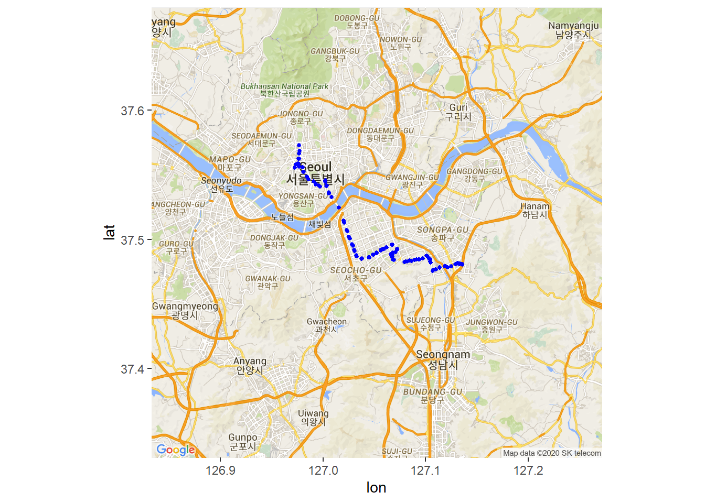
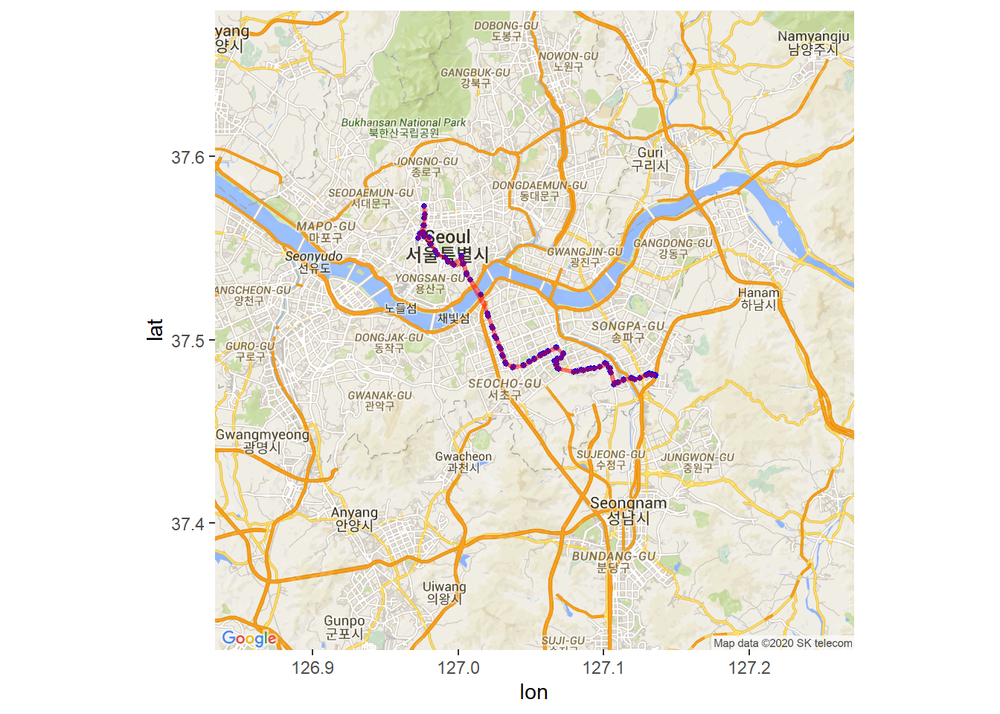

3 버스 노선의 정류소 정보 시각화
다운받은 버스 노선 정류소 데이터 세트인 station을 이용하여 Google 지도에 노선의 정류소 경로를 시각화한다.
즉, 구글 맵에 버스 노선의 정류소들을 선으로 연결해서 표시해 보기로 한다.
1. 패키지 불러오기
3.1 2. 버스 정류소 위치를 Marker로 표시하기
3.1.1 2-1. Google API 인증
register_google(key="API Key") # https://console.cloud.google.com 에서 확인3.1.2 2-2. 버스 위치의 중심점 찾기
station 데이터 세트에서 위치정보 컬럼만 선택하여, gc 에 대입한다.
그리고 버스 정류소의 중심 위치를 확인하여 cen에 대입한다.
3.1.3 2-3. 구글 지도 정보 가져오기
get_googlemap() 함수를 이용하여 구글 지도 정보를 가져온다. 그 결과는 map에 대입한다.
## Source : https://maps.googleapis.com/maps/api/staticmap?center=37.505458,127.052123&zoom=11&size=640x640&scale=2&maptype=roadmap&markers=37.48064,127.135944%7C37.480941,127.133306%7C37.481607,127.131555%7C37.480549,127.129128%7C37.479116,127.124773%7C37.478255,127.121259%7C37.479148,127.119361%7C37.478254,127.113801%7C37.476757,127.1098%7C37.476098,127.107685%7C37.482016,127.105161%7C37.484552,127.104674%7C37.487189,127.100736%7C37.48535,127.097246%7C37.484528,127.093353%7C37.484399,127.090989%7C37.483489,127.08475%7C37.482913,127.080583%7C37.483809,127.069211%7C37.486708,127.067471%7C37.488434,127.066416%7C37.489313,127.068449%7C37.489949,127.070599%7C37.492414,127.072487%7C37.495767,127.066974%7C37.493859,127.061498%7C37.49256,127.05858%7C37.491586,127.056523%7C37.489736,127.052466%7C37.488145,127.048961%7C37.486164,127.044562%7C37.485251,127.037969%7C37.486653,127.033097%7C37.491087,127.030987%7C37.494993,127.029112%7C37.500785,127.02637%7C37.506367,127.023728%7C37.512972,127.020607%7C37.524552,127.015683%7C37.532866,127.008338%7C37.536442,127.00573%7C37.541578,127.00354%7C37.545795,127.002202%7C37.544437,127.00204%7C37.541621,126.996235%7C37.542704,126.99279%7C37.54485,126.990932%7C37.546397,126.98584%7C37.54869,126.98432%7C37.552282,126.980835%7C37.555737,126.980093%7C37.556627,126.976711%7C37.558613,126.976205%7C37.562358,126.976574%7C37.568363,126.977365%7C37.572658,126.976565%7C37.566212,126.976836%7C37.562145,126.975905%7C37.555388,126.972762%7C37.558001,126.973628%7C37.558558,126.975672%7C37.556198,126.976626%7C37.552044,126.981134%7C37.548395,126.984167%7C37.54626,126.985632%7C37.544673,126.990733%7C37.542505,126.992917%7C37.540892,126.997312%7C37.541175,127.003178%7C37.535491,127.005729%7C37.514489,127.019939%7C37.507226,127.023032%7C37.501817,127.025438%7C37.496042,127.028401%7C37.491895,127.030405%7C37.487667,127.032432%7C37.484769,127.037419%7C37.485919,127.044978%7C37.487972,127.04938%7C37.489168,127.052111%7C37.491182,127.056547%7C37.492577,127.059611%7C37.49382,127.062253%7C37.495605,127.067708%7C37.492262,127.072156%7C37.490243,127.070593%7C37.489554,127.068378%7C37.488489,127.066123%7C37.48653,127.067244%7C37.4845,127.0682%7C37.482472,127.079579%7C37.482805,127.082122%7C37.483383,127.085975%7C37.483863,127.089107%7C37.484321,127.093769%7C37.485281,127.097607%7C37.486848,127.10185%7C37.48485,127.103602%7C37.482655,127.104399%7C37.475659,127.107295%7C37.476668,127.110393%7C37.477818,127.113478%7C37.478943,127.119043%7C37.478215,127.121195%7C37.479007,127.124888%7C37.480632,127.129475%7C37.481598,127.131337%7C37.48096,127.13364%7C37.480357,127.135903&key=xxx3.1.4 2-4. 구글 지도 그리기
3.2 3. 버스 정류소 위치에 정류소 이름 표시하기
3.2.1 3-1. 구글 지도 정보 가져오기
## Source : https://maps.googleapis.com/maps/api/staticmap?center=37.505458,127.052123&zoom=11&size=640x640&scale=2&maptype=roadmap&key=xxx3.2.2 3-2. 정류소 위치를 점으로 표시하기
geom_point() 함수를 이용하여 정류소의 위치에 점을 찍는다.
ggmap(map1) + geom_point(data = station, # 데이터 세트
aes(x= lon, y = lat), # 위치 정보
size = 1, # 점의 크기
colour = 'blue') # 점의 색깔
3.2.3 3-3. 정류소 이름을 표시하기
geom_text() 함수를 이용하여 station 데이터 세트의 stationNm 컬럼을 label의 인수로 지정하여 지도를 그린다.
ggmap(map1) + geom_point(data = station, # 데이터 세트
aes(x= lon, y = lat), # 위치 정보
size = 1, # 점의 크기
colour = 'blue') + # 점의 색깔
geom_text(data = station, # 데이터 세트
aes(x = lon, y = lat), # 위치 정보
size = 2, # 글자의 크기
label = station$stationNm, # 정류소 이름
color = "red")
3.2.4 3-4. 정류소를 선으로 연결하기
ggmap(map1) + geom_point(data = station, # 데이터 세트
aes(x= lon, y = lat), # 위치 정보
size = 1, # 점의 크기
colour = 'blue') + # 점의 색깔
# 정류소 이름
# geom_text(data = station, # 데이터 세트
# aes(x = lon, y = lat), # 위치 정보
# size = 2, # 글자의 크기
# label = station$stationNm, # 정류소 이름
# color = "red") +
geom_path(data = station,
aes(x = lon, y = lat),
color = "red",
alpha = .5,
lwd = 1)